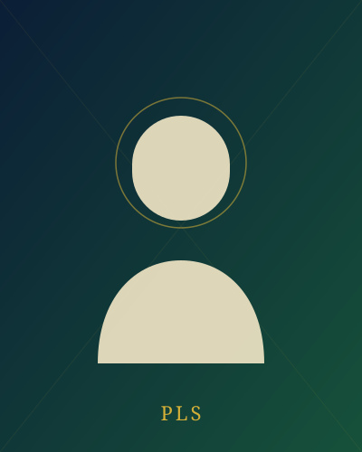

Biography
A Journey Rooted in Grassroots Service
Prince Lanre Sanusi — popularly known by his initials, PLS — is the Executive Chairman of Amuwo-Odofin Local Government Area, Lagos State. His path to the office was built over years of grassroots organising rather than a single campaign season, and residents of Festac Town, Mile 2, Agboju, Kirikiri and the wider council have watched that groundwork take shape into a hands-on, results-focused administration.
Education. [Add primary and secondary school names], before proceeding to [add tertiary institution, course of study and year of graduation]. (Placeholder — replace with verified biographical details.)
Early involvement. Long before contesting for office, Prince Sanusi was known within Amuwo-Odofin and neighbouring Ifelodun LCDA as a dependable party organiser, helping build the All Progressives Congress's (APC) structures at the grassroots and earning a reputation for reliability and consistency within the community.
The Road to the Secretariat
Career & Political Journey
-
2018
First Bid for Public Office
Declared interest in representing the Amuwo Odofin Federal Constituency in the House of Representatives under the APC, drawing early attention as a serious grassroots contender.
-
2019
Stepping Down for Party Unity
Withdrew from the race in the interest of party unity — an early signal of the consensus-building approach that would later define his leadership style.
-
2022
Primary Election Victory
Won the APC primary for the Amuwo Odofin Federal Constituency seat, though he was not ultimately fielded in the general election.
-
2025
Consensus Candidate for Chairmanship
Shifted focus to grassroots leadership, emerging from the APC screening process with over 80% support against more than 20 other aspirants to become the party's consensus candidate for Amuwo-Odofin Chairman.
-
12 July 2025
Elected Executive Chairman
Won the Amuwo-Odofin chairmanship election with 24,926 votes in the Lagos State local government polls, and received his Certificate of Return from LASIEC on 16 July 2025 alongside Vice Chairman Maureen Chika Ashara.
-
2025 – Present
Governing With Purpose
In his inaugural address, Chairman Sanusi described himself as a servant-leader entrusted with a mandate for progress and people-centred governance, and pledged that every voice in Amuwo-Odofin would be heard.
Leadership Philosophy
Open, Transparent and Accountable
Transparency
Public reporting on projects and spending, and a government that explains its decisions rather than simply announcing them.
Grassroots Development
Investment reaching every ward — Oriade and Amuwo alike — not only the areas with the loudest voices.
Human Capital Investment
Skills, education and healthcare as the foundation of long-term prosperity — not one-off gestures.
Office of the Chairman
Leadership Team

Prince Lanre Sanusi
Executive Chairman
Leads the council's executive administration, setting the agenda for infrastructure, sanitation, education and inclusive governance across Amuwo-Odofin.
Hon. (Mrs) Maureen Chika Ashara
Vice Chairman
Elected alongside Chairman Sanusi in July 2025, and notably the first Igbo Nigerian to hold the office of Vice Chairman in Amuwo-Odofin's history — a reflection of the administration's commitment to inclusive governance. Active in community, youth and interethnic-unity initiatives across the council.
Family
A Foundation Built on Family
Prince Lanre Sanusi is a devoted family man who credits his upbringing and family values for shaping his commitment to public service. He believes strong families are the foundation of strong communities — a principle reflected in his administration's focus on programmes that support households across Amuwo-Odofin.